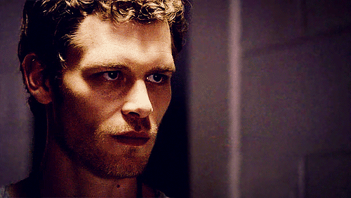

Joseph Morgan

- Joseph Morgan, nasceu em 16 de maio de 1981, na Inglaterra.
- Ele morou em Morriston, Swansea por 11 anos e foi aluno da Morriston Comprehensive School antes de se mudar para Londres para estudar na Central School of Speech and Drama já mais velho.
- Ele estreou na série Sky One, como Troy e fez algumas participações em alguns filmes como "Alexander" e "Master and Commander: The Far Side of the World".
- Nos dias de hoje, vem atuando como o vampiro original, Klaus no seriado The Vampire Diaries da CW.